Life sheet · 4th great-grandmother
Rebecca Staggs Graham
Born 16 Jul 1794Documented (stone; taken as given)
Headstone, Graham Cemetery
Died 10 Oct 1895Documented (stone)
Headstone; the estate petition says "on or about 6th day of October 1895". Life: 101 years, 2 months, 24 days.
- bornSouth Carolina (1850 census)
- 1820married in Jefferson County
- 1820 to 1895with William in T15S R3W; "her home at Grimestown, precinct 28" (1895)
- burialGraham Cemetery (headstone); "on the property of the family and beside the grave of deceased's father-in-law" (Birmingham News 1895)
Parents not known (a contributed tree names William John Staggs and Emma Elizabeth Wells: unverified). Wife of William Graham (about 1804 to 1883)
- Married to
- William Graham about 1804 (1803 to 1805) to 28 Oct 1883
- Children
- Thomas Graham about 1823 (1822 to 1823) to January 1864, ChattanoogaMary M. Graham Gowins about 1823 to 1888Elizabeth "Bettie" Graham Tyler about 1826 to after 1896Lucretia J. Graham James about 1829 to after 1880Sarah "Sallie" Graham Hancock about 1830 to after 1896John Graham about 1831 (1830 to 1831) to 1863 (day and place not recorded)Amanda Graham Partain about 1833 to after 1896William Graham (the son) about 1837 to after 1896Henry Harrison Graham 16 May 1846 to 25 Oct 1934
- Parents of William Graham
- Thompson (Thomas) GrahamStrongly supportedHannah GrahamStrongly supported
As written in the records: Rebecca Staggs (1820 marriage licence) · Rebecca (1850 census) · "My Grand Mothers name is Rebecca Graham" (Nancy's deposition, claim 7100 p23 (Rebecca was her mother-in-law)) · Rebecca Grimes (1880 census index) · Rebecca Graham alias Rebecca Grimes (1896 court papers (family book pp181-182)) · Mrs. Rebecca Graham (1895 newspapers) · REBECCA wife of WILLIAM GRAHAM (headstone)
Dates and ages
- Licence to marry William Graham (29 Jan 1820)Marriage licence no. 87Documented25 years, 6 months, 13 days
- Marries William Graham (30 Jan 1820)Marriage licence no. 87, returnDocumented25 years, 6 months, 14 days
- 1850 census (census day 1 June; enumerated 23 Nov 1850)1850 census p201, dwelling 20 (image)Documented55 years, 10 months, 16 daysAge as recorded: 47
- Son Henry Harrison born (16 May 1846, family book)Family book p129 (the 1850 census gives him 7)Documented (family book)51 years, 10 months, 0 days
- Her son Thomas dies at Chattanooga (January 1864)Claim 7100 p2Documented (month)between 69 years, 5 months, 16 days and 69 years, 6 months, 15 days
- Sees Nancy's mare in the soldiers' hands and asks for her back ("on or about" 28 Mar 1865)Claim 7100 p23Documented70 years, 8 months, 12 days
- 1870 census (census day 1 June)1870 census, dwelling 137 (index)Documented (index)75 years, 10 months, 16 daysAge as recorded: 70
- 1880 census (census day 1 June)1880 census, dwelling 62 (index)Documented (index)85 years, 10 months, 16 daysAge as recorded: 84
- William dies (22 to 28 Oct 1883)Family book p111; petition p181Documentedbetween 89 years, 3 months, 6 days and 89 years, 3 months, 12 days
- Paid $83.10 by the executor (12 Feb 1884)Objection to the final account, family book p182Documented (as transcribed)89 years, 6 months, 27 days
- Family reunion "for the 100th birthday" (16 Jul 1895, per one newspaper)Birmingham News 25 Oct 1895 p2Documented (one newspaper)101 years, 0 months, 0 daysAge as recorded: 100
- Dies (10 Oct 1895)Headstone, Graham CemeteryDocumented101 years, 2 months, 24 daysAge as recorded: 101 yrs, 2 months & 24 days (stone)
How each age is worked out
- Licence to marry William Graham (29 Jan 1820)16 Jul 1794 to 29 Jan 1820 is 25 years, 6 months, 13 days
- Marries William Graham (30 Jan 1820)16 Jul 1794 to 30 Jan 1820 is 25 years, 6 months, 14 days
- 1850 census (census day 1 June; enumerated 23 Nov 1850)16 Jul 1794 to 1 Jun 1850 is 55 years, 10 months, 16 days
- Son Henry Harrison born (16 May 1846, family book)16 Jul 1794 to 16 May 1846 is 51 years, 10 months, 0 days
- Her son Thomas dies at Chattanooga (January 1864)16 Jul 1794 to 1 Jan 1864 is 69 years, 5 months, 16 days; to 31 Jan 1864 is 69 years, 6 months, 15 days
- Sees Nancy's mare in the soldiers' hands and asks for her back ("on or about" 28 Mar 1865)16 Jul 1794 to 28 Mar 1865 is 70 years, 8 months, 12 days
- 1870 census (census day 1 June)16 Jul 1794 to 1 Jun 1870 is 75 years, 10 months, 16 days
- 1880 census (census day 1 June)16 Jul 1794 to 1 Jun 1880 is 85 years, 10 months, 16 days
- William dies (22 to 28 Oct 1883)16 Jul 1794 to 22 Oct 1883 is 89 years, 3 months, 6 days; to 28 Oct 1883 is 89 years, 3 months, 12 days
- Paid $83.10 by the executor (12 Feb 1884)16 Jul 1794 to 12 Feb 1884 is 89 years, 6 months, 27 days
- Family reunion "for the 100th birthday" (16 Jul 1895, per one newspaper)16 Jul 1794 to 16 Jul 1895 is 101 years, 0 months, 0 days
- Dies (10 Oct 1895)16 Jul 1794 to 10 Oct 1895 is 101 years, 2 months, 24 days
Calendar method: whole years, then whole months, then days, counted from the birth date. Never rounded. Where the record gives only a month or a season, or the birth is known only as a range, both ends are shown.
What the records say
Census and farm records1
- 1850: born South Carolina, 47, marked unable to read or write.1850 census p201 (image)Documented
Conscription and death1
- 1865: Nancy swore that "her grandmother" (Rebecca) saw the mare in the soldiers' possession and tried to get them to give her back, and was told "she was too good a mare."Claim 7100 p23 (image)Documented
Estate1
- Estate: T. J. James, her grandson, petitioned 19 May 1896; personal estate "a few head of cattle, small amount of household goods," and claims against H. H. Graham as executor and for rent of land; about $100 outside those claims.Final Settlement Book 1 pp430-431, as transcribed in the family book p183Documented (as transcribed)
Other records6
- Headstone: "REBECCA wife of WILLIAM GRAHAM. Born July 16, 1794. Died Oct 10 1895. Age 101 yrs, 2 months & 24 days." Below: "Another link is broken in our household band, but a chain is forming in a better land."Headstone, Graham Cemetery (photo)Documented
- William's will left his personal property to "my beloved wife," to be divided among the daughters "at such time as shall or may suit the convenience of my beloved wife, Rebecca." In 1896 the daughters said the executor never delivered any of it to her.Petition, family book p181Documented (as transcribed)
- Birmingham News, 25 Oct 1895: "aged 100 years and three months, died this week at her home at Grimestown, precinct 28"; a reunion on 16 July for her 100th birthday with "the four widowed daughters," 59 grandchildren, 135 great-grandchildren and eight great-great-grandchildren; buried "beside the grave of deceased's father-in-law" (no name given).Birmingham News 25 Oct 1895 p2Documented (newspaper)
- The wire story, printed in at least seven papers: "aged 103 years," "the oldest person in Alabama," and "had resided in the same spot for eighty-five years." "Died Thursday": 10 Oct 1895 was a Thursday.Scottsboro Citizen 31 Oct 1895 p1 and others (newspaper log, search 36)Documented (newspaper)
- Her age: 101 by the stone; 100 and three months, or 103, in the papers; 47 in 1850 (about 1803). The stone stands.Documented (stone)
- Her tie to the Jefferson County Staggs (Ezekiel, Zachariah, Samuel, John) is not stated in any record found.Family book p138; Maternal lines noteUnresolved
Household as recordedages as recorded
| William (husband) | 46 | farmer |
| Rebecca | 47 | |
| Elizabeth | 24 | |
| Lucretia | 21 | |
| Sarah | 20 | |
| John | 19 | farmer |
| Amanda | 17 | |
| William | 13 | |
| Henry H. | 7 |
| William Grimes (husband) | 80 | farmer |
| Rebecca Grimes | 84 | housekeeper |
| Matilda V. (granddaughter) | 14 |
Children (named as hers in her 1896 estate; 1850 census ages unless noted)
Thomas (about 1823), Mary M. (Gowins) (about 1823), Elizabeth "Bettie" (Tyler) (about 1826), Lucretia J. (James) (about 1829), Sarah "Sallie" (Hancock) (about 1830), John (about 1831), Amanda (Partain) (about 1833), William (about 1837), Henry Harrison (16 May 1846 (family book))
Open questions and missing documents
- Her parents Staggs estates 1818 to 1840 naming heirs; Zachariah Staggs's War of 1812 file (TO GATHER 8.5)
- Where in South Carolina she was born Same; Pendleton District Staggs (Maternal lines note)
- Whose grave she was buried beside ("father-in-law") Graham Cemetery walk, every stone and fieldstone around hers (TO GATHER 7.1)
- Her estate papers in full Final Settlement Book 1 pp430-431 (TO GATHER 3.3)
- The 1896 suit against the executor: outcome Probate originals (TO GATHER 3.3)
- Henry Harrison: the 1900 census gives his father born S.C. and mother Tennessee His death certificate (1934); one census entry only
Documents
Click an image to read it here. Scans are web copies; the originals are in the family folder.
Vital records3

Claims94
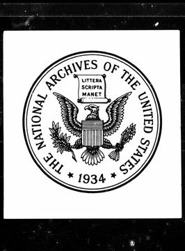
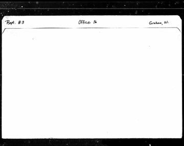
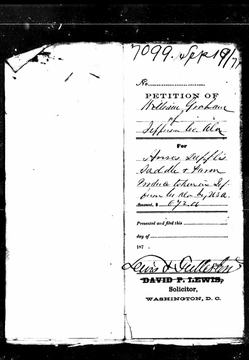
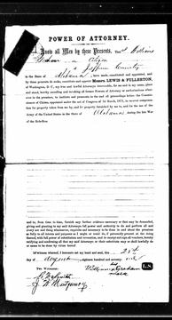
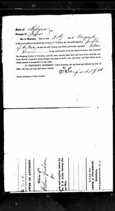
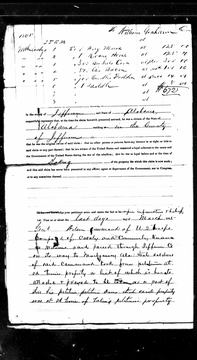
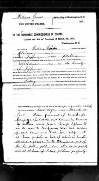
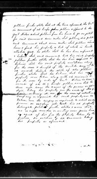
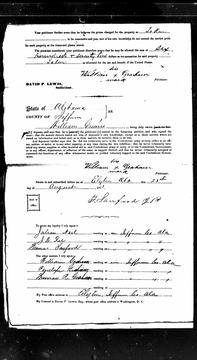
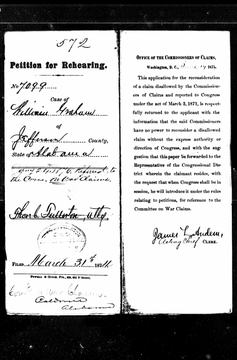
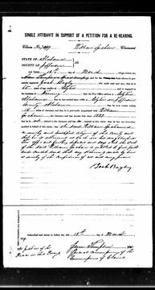
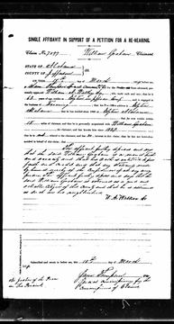
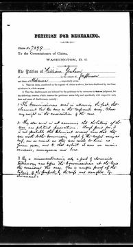
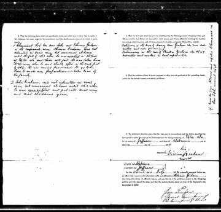
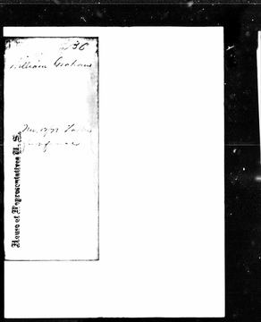
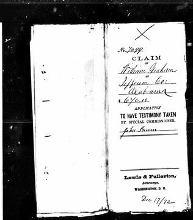
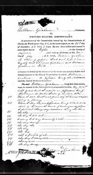
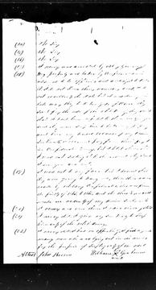
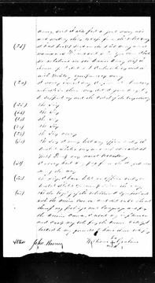
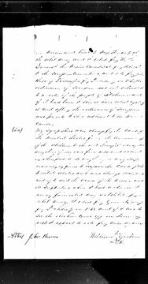
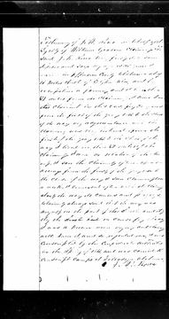
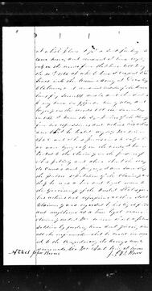
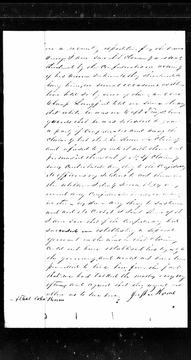
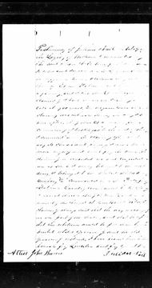
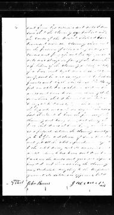
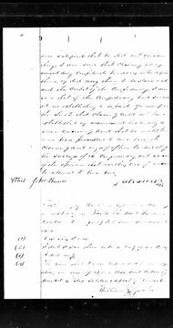
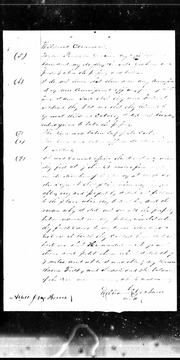
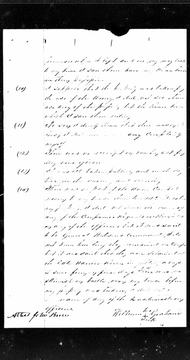
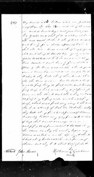
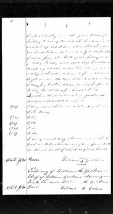
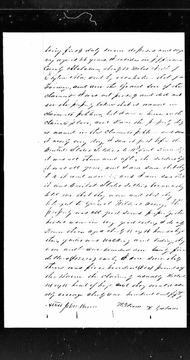
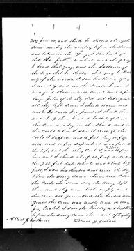
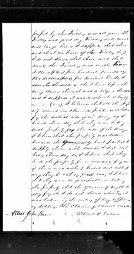
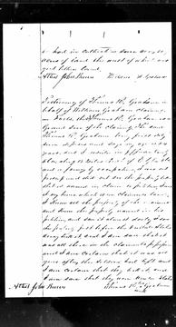
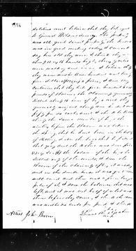
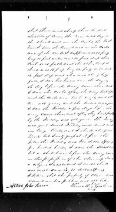
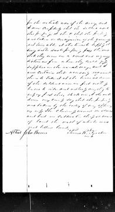
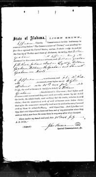
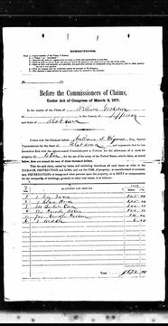
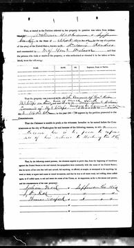
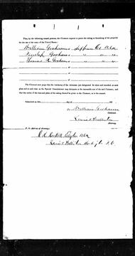
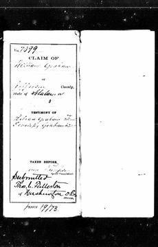
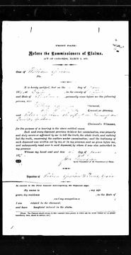
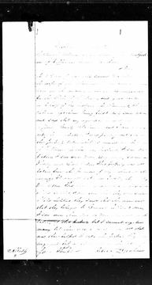
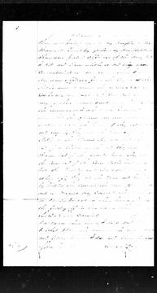
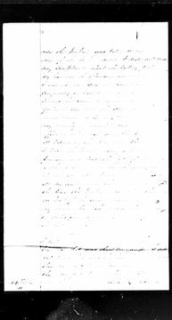
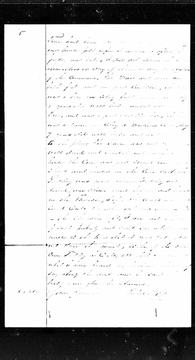
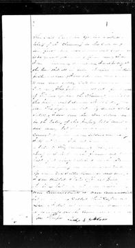


Newspapers15


The years around this life
How to read the turnings, and where they come from
Two American authors, William Strauss and Neil Howe, proposed that American history moves in cycles of about 80 to 85 years. Each cycle has four "turnings" of about 21 years, and people born in the same stretch form a "generation" with one of four archetypes. The idea is in their books Generations (1991) and The Fourth Turning (1997).
- High. Institutions are strong and individualism is weak.
- Awakening. Institutions are attacked and individualism rises.
- Unraveling. Institutions are weak and distrusted, and individualism is strong.
- Crisis. Institutions are rebuilt and individualism declines.
- Prophet. Born in a High, comes of age in an Awakening.
- Nomad. Born in an Awakening, comes of age in an Unraveling.
- Hero. Born in an Unraveling, comes of age in a Crisis.
- Artist. Born in a Crisis, comes of age in a High.
What it is not. It is a theory, not a record and not a measurement. Many historians do not accept it as science. Critics say it is too vague to be proven wrong, and that it fits a pattern onto events after the fact. It was built on American history from 1584, with an Anglo-American focus. The authors say similar cycles show up in other developed countries; I have not checked that, and it may not fit histories outside the West. The turning dates and the generation names on these pages are theirs. They say nothing about any one person in the family, and nothing on this page claims a person had a trait because of the year they were born.
Why it is here. Grouping the years helps me see a life next to its time. The names are theirs, and I like them.
Read more: the books, at Open Library (the primary source) · Strauss–Howe generational theory, on Wikipedia, which also lists the criticism with its sources.
Era of Good Feelings High, 1794 to 1822
In their own records
- 1820-01-29 Licence to marry William Graham (29 Jan 1820) Marriage licence no. 87Documented
- 1820-01-30 Marries William Graham (30 Jan 1820) Marriage licence no. 87, returnDocumented
In the family's records
- 1820-01-30 William Graham and Rebecca Staggs marry, six weeks after Jefferson County was created (licence 29 Jan 1820) Marriage licence no. 87Documented
History in these years (period context, not about this person)
- 1798-04-07 Mississippi Territory organized from land ceded by Georgia (later Alabama and Mississippi) alabama; Wikipedia, Mississippi Territory
- 1803-04-30 Louisiana Purchase treaty signed ($15 million) national; Wikipedia, Louisiana Purchase
- 1805 Georgia's first land lottery (lotteries ran 1805 to 1833) national; Wikipedia, Georgia land lotteries
- 1812-06-18 to 1815-02-17 War of 1812 national; Wikipedia, War of 1812 (infobox)
- 1813-07-22 to 1814-08-09 Creek War alabama; Wikipedia, Creek War (infobox)
- 1813-11-09 Battle of Talladega alabama; Wikipedia, Creek War
- 1814-03-27 Battle of Horseshoe Bend alabama; Wikipedia, Creek War
- 1814-08-09 Treaty of Fort Jackson: the Creek Nation cedes more than 21 million acres alabama; Wikipedia, Creek War (the page gives 21 and 22 million in different places)
- 1815-01-08 Battle of New Orleans national; Wikipedia, Battle of New Orleans
- 1817-03-03 Congress passes the act creating Alabama Territory (in effect 10 Oct 1817) alabama; Wikipedia, Alabama Territory (the page also gives 15 Aug and 10 Dec 1817)
- 1819 to 1821 Panic of 1819 national; Wikipedia, Panic of 1819 (years only)
- 1819-12-13 Jefferson County created; Carrollsville the first county seat local; Encyclopedia of Alabama, Jefferson County
- 1819-12-14 Alabama admitted as the 22nd state alabama; Wikipedia, Alabama Territory
- 1820-07-01 Land Act of 1820 in effect: federal land $1.25 an acre, cash only national; Wikipedia, Land Act of 1820
- 1821 County seat moves to Elyton (until 1873) local; Encyclopedia of Alabama, Jefferson County
Conjunctions and oppositions in these years (a clockface, not a cause)
- ✦ Saturn-Pluto opposition, exact 3 times: 1801-10-13 (3° Virgo / 3° Pisces); 1802-02-12 (4° Virgo / 4° Pisces); 1802-07-31 (6° Virgo / 6° Pisces)within 1 year of: 1803-04-30 Louisiana Purchase treaty signed ($15 million). Dates side by side, not a cause.
- Saturn-Uranus conjunction, exact once: 1805-11-17 (23° Libra / 23° Libra)
- Saturn-Neptune conjunction, exact once: 1809-12-01 (6° Sagittarius / 6° Sagittarius)
- ✦ Saturn-Pluto conjunction, exact 3 times: 1819-05-05 (27° Pisces / 27° Pisces); 1819-10-05 (26° Pisces / 26° Pisces); 1820-01-11 (25° Pisces / 25° Pisces)within 1 year of: 1819 Panic of 1819; 1819-12-14 Alabama admitted as the 22nd state. Dates side by side, not a cause.
- Uranus-Neptune conjunction, exact 3 times: 1821-03-22 (3° Capricorn / 3° Capricorn); 1821-05-03 (2° Capricorn / 2° Capricorn); 1821-12-03 (1° Capricorn / 1° Capricorn)
Transcendental Awakening, 1822 to 1844
In their own records
- Nothing dated in these years on this sheet.
History in these years (period context, not about this person)
- 1825-10-26 Erie Canal completed national; Wikipedia, Erie Canal
- 1830-05-28 Indian Removal Act signed national; Wikipedia, Indian Removal Act
- 1836 to 1838 Recession of 1836 to 1838 (the Panic of 1837) national; Wikipedia, List of recessions in the United States (no month given)
Conjunctions and oppositions in these years (a clockface, not a cause)
- Saturn-Neptune opposition, exact 3 times: 1827-08-05 (14° Cancer / 14° Capricorn); 1828-01-15 (16° Cancer / 16° Capricorn); 1828-05-29 (17° Cancer / 17° Capricorn)
- ✦ Saturn-Uranus opposition, exact 3 times: 1828-08-27 (29° Cancer / 29° Capricorn); 1829-01-10 (1° Leo / 1° Aquarius); 1829-07-09 (5° Leo / 5° Aquarius)within 1 year of: 1830-05-28 Indian Removal Act signed. Dates side by side, not a cause.
- Saturn-Pluto opposition, exact once: 1834-09-30 (12° Libra / 12° Aries)
Unraveling, 1844 to 1860
In their own records
- 1850-06-01 1850 census (census day 1 June; enumerated 23 Nov 1850) 1850 census p201, dwelling 20 (image)Documented
- 1846-05-16 Son Henry Harrison born (16 May 1846, family book) Family book p129 (the 1850 census gives him 7)Documented (family book)
History in these years (period context, not about this person)
- 1844-05-24 Morse's Washington to Baltimore telegraph line opens national; Wikipedia, Samuel Morse
- 1854 to 1862 Graduation Act: unsold federal land as low as 12½ cents an acre national; NPS, Ozark National Scenic Riverways Historic Resource Study, ch. 4 ("eight-year life of the statute")
- 1857-06 to 1858-12 Panic of 1857 (recession) national; Wikipedia, List of recessions
Conjunctions and oppositions in these years (a clockface, not a cause)
- Saturn-Neptune conjunction, exact 3 times: 1846-04-04 (27° Aquarius / 27° Aquarius); 1846-09-05 (26° Aquarius / 26° Aquarius); 1846-12-11 (25° Aquarius / 25° Aquarius)
- Uranus-Pluto conjunction, exact 3 times: 1850-06-26 (29° Aries / 29° Aries); 1850-09-25 (29° Aries / 29° Aries); 1851-03-23 (28° Aries / 28° Aries)
- Saturn-Pluto conjunction, exact 3 times: 1851-06-06 (0° Taurus / 0° Taurus); 1851-11-11 (29° Aries / 29° Aries); 1852-02-10 (28° Aries / 28° Aries)
- Saturn-Uranus conjunction, exact once: 1852-03-15 (2° Taurus / 2° Taurus)
Civil War Crisis, 1860 to 1865
In their own records
- 1864-01-01 Her son Thomas dies at Chattanooga (January 1864) Claim 7100 p2Documented (month)
History in these years (period context, not about this person)
- 1861-01-11 Alabama adopts its Ordinance of Secession, 61 to 39 alabama; Encyclopedia of Alabama, Alabama Constitution of 1861 (the article misprints 1865 once)
- 1861-04-12 to 1861-04-13 Fort Sumter national; Wikipedia, Battle of Fort Sumter
- 1862-04-16 First Confederate Conscription Act: white men 18 to 35 national; Wikipedia, Confederate Conscription Acts 1862-1864
- 1862-09-27 Conscription age raised to 45 national; Wikipedia, Confederate Conscription Acts
- 1863-01-01 Emancipation Proclamation national; Wikipedia, Emancipation Proclamation
- 1863-11-24 to 1863-11-25 Lookout Mountain and Missionary Ridge; Union holds Chattanooga afterward national; Wikipedia, Battles for Chattanooga
- 1864-02-17 Conscription widened to white men 17 to 50 national; Wikipedia, Confederate Conscription Acts
Conjunctions and oppositions in these years (a clockface, not a cause)
- ✦ Saturn-Neptune opposition, exact 3 times: 1862-11-05 (1° Libra / 1° Aries); 1863-03-11 (3° Libra / 3° Aries); 1863-09-05 (5° Libra / 5° Aries)within 1 year of: 1863-01-01 Emancipation Proclamation. Dates side by side, not a cause.
Reconstruction and Gilded Age High, 1865 to 1886
In their own records
- 1865-03-28 Sees Nancy's mare in the soldiers' hands and asks for her back ("on or about" 28 Mar 1865) Claim 7100 p23Documented
- 1870-06-01 1870 census (census day 1 June) 1870 census, dwelling 137 (index)Documented (index)
- 1880-06-01 1880 census (census day 1 June) 1880 census, dwelling 62 (index)Documented (index)
- 1883-10-22 William dies (22 to 28 Oct 1883) Family book p111; petition p181Documented
- 1884-02-12 Paid $83.10 by the executor (12 Feb 1884) Objection to the final account, family book p182Documented (as transcribed)
In the family's records
- 1865-03-28 Wilson's troops take Nancy's corn, bacon, fodder, oats, mare and mule ("on or about the 28th day of March 1865") Claim 7100 pp22-24Documented
History in these years (period context, not about this person)
- 1865-03-22 to 1865-04-20 Wilson's Raid through Alabama and Georgia alabama; Wikipedia, Wilson's Raid
- 1865-03-28 Skirmish at Elyton; Oxmoor and Irondale furnaces destroyed local; Wikipedia, Wilson's Raid
- 1865-12-06 Thirteenth Amendment ratified (Alabama ratified 2 Dec 1865) national; Wikipedia, Thirteenth Amendment
- 1866-06-21 to 1876-06 Southern Homestead Act (Alabama among five states); repealed June 1876 national; Wikipedia, Southern Homestead Act of 1866
- 1870-12-18 Elyton Land Company organized local; Encyclopedia of Alabama, Birmingham
- 1871 to 1880 Southern Claims Commission (claims filed 1871 to 1873) national; Wikipedia, Southern Claims Commission
- 1871-12-19 Birmingham chartered, at the crossing of two rail lines local; Encyclopedia of Alabama, Birmingham
- 1873 County seat moves from Elyton (seat since 1821) to Birmingham local; Encyclopedia of Alabama, Jefferson County; Birmingham
- 1873-07 Cholera epidemic hits many southern cities, Birmingham among them local; Encyclopedia of Alabama, Birmingham
- 1873-10 to 1879-03 Panic of 1873 and the Long Depression national; Wikipedia, List of recessions
- 1876-03-07 Bell granted the telephone patent national; Wikipedia, Invention of the telephone
- 1882-04 Sloss Furnaces' first blast (City Furnaces, Birmingham) local; Wikipedia, Sloss Furnaces; EOA says construction began June 1881
- 1882-09-04 Pearl Street Station, New York, starts generating electricity national; Wikipedia, Pearl Street Station
Conjunctions and oppositions in these years (a clockface, not a cause)
- ✦ Saturn-Pluto opposition, exact once: 1866-11-01 (14° Scorpio / 14° Taurus)within 1 year of: 1865-12-06 Thirteenth Amendment ratified (Alabama ratified 2 Dec 1865). Dates side by side, not a cause.
- ✦ Saturn-Uranus opposition, exact 7 times: 1873-04-07 (1° Aquarius / 1° Leo); 1873-05-23 (2° Aquarius / 2° Leo); 1874-02-16 (7° Aquarius / 7° Leo); 1874-08-04 (10° Aquarius / 10° Leo); 1875-01-14 (14° Aquarius / 14° Leo); 1875-10-21 (19° Aquarius / 19° Leo); 1875-11-19 (19° Aquarius / 19° Leo)within 1 year of: 1873-10 Panic of 1873 and the Long Depression. Dates side by side, not a cause.
- Saturn-Neptune conjunction, exact once: 1882-05-12 (16° Taurus / 16° Taurus)
- Saturn-Pluto conjunction, exact once: 1883-05-22 (29° Taurus / 29° Taurus)
Missionary Awakening, 1886 to 1908
In their own records
- 1895-07-16 Family reunion "for the 100th birthday" (16 Jul 1895, per one newspaper) Birmingham News 25 Oct 1895 p2Documented (one newspaper)
- 1895-10-10 Dies (10 Oct 1895) Headstone, Graham CemeteryDocumented
In the family's records
- 1890-08-07 William H. Brooks (very probably Martha's brother, about 17) dies at Brookside; 1891 petition against Sloss Iron and Steel Co. Family book p134; 1880 censusStrongly supported
History in these years (period context, not about this person)
- 1893-01 to 1894-06 Panic of 1893 national; Wikipedia, List of recessions
Conjunctions and oppositions in these years (a clockface, not a cause)
- ✦ Neptune-Pluto conjunction, exact 3 times: 1891-08-02 (8° Gemini / 8° Gemini); 1891-11-05 (8° Gemini / 8° Gemini); 1892-04-30 (7° Gemini / 7° Gemini)within 1 year of: 1893-01 Panic of 1893. Dates side by side, not a cause.
☌ conjunction, ☍ opposition (larger), □ square. Ticks under the transits are sign ingresses (dashed: retrograde back-entry). A gold ring on the bar is a birth, marriage or death within 1 year of a ☌ or ☍. A gold band is a ☌ or ☍ (all its exact passes) within 1 year of a history item. Dates side by side, not a cause. Astrology is shown as a clockface. Hover for detail; the list below has the same items. History dots: national, Alabama, local; black squares are events in our own records.
List view: 63 items (history, family records, and the conjunctions and oppositions only; ✦ marks a conjunction or opposition within 1 year of a history item)
| 1798-04-07 | Mississippi Territory organized from land ceded by Georgia (later Alabama and Mississippi) | alabama; Wikipedia, Mississippi Territory |
| 1801-10-13 | ✦ Saturn-Pluto opposition, exact 3 times: 1801-10-13 (3° Virgo / 3° Pisces); 1802-02-12 (4° Virgo / 4° Pisces); 1802-07-31 (6° Virgo / 6° Pisces) history within 1 year: 1803-04-30 Louisiana Purchase treaty signed ($15 million) | computed (Swiss Ephemeris), transits CSV |
| 1803-04-30 | Louisiana Purchase treaty signed ($15 million) | national; Wikipedia, Louisiana Purchase |
| 1805 | Georgia's first land lottery (lotteries ran 1805 to 1833) | national; Wikipedia, Georgia land lotteries |
| 1805-11-17 | Saturn-Uranus conjunction, exact once: 1805-11-17 (23° Libra / 23° Libra) | computed (Swiss Ephemeris), transits CSV |
| 1809-12-01 | Saturn-Neptune conjunction, exact once: 1809-12-01 (6° Sagittarius / 6° Sagittarius) | computed (Swiss Ephemeris), transits CSV |
| 1812-06-18 to 1815-02-17 | War of 1812 | national; Wikipedia, War of 1812 (infobox) |
| 1813-07-22 to 1814-08-09 | Creek War | alabama; Wikipedia, Creek War (infobox) |
| 1813-11-09 | Battle of Talladega | alabama; Wikipedia, Creek War |
| 1814-03-27 | Battle of Horseshoe Bend | alabama; Wikipedia, Creek War |
| 1814-08-09 | Treaty of Fort Jackson: the Creek Nation cedes more than 21 million acres | alabama; Wikipedia, Creek War (the page gives 21 and 22 million in different places) |
| 1815-01-08 | Battle of New Orleans | national; Wikipedia, Battle of New Orleans |
| 1817-03-03 | Congress passes the act creating Alabama Territory (in effect 10 Oct 1817) | alabama; Wikipedia, Alabama Territory (the page also gives 15 Aug and 10 Dec 1817) |
| 1819-05-05 | ✦ Saturn-Pluto conjunction, exact 3 times: 1819-05-05 (27° Pisces / 27° Pisces); 1819-10-05 (26° Pisces / 26° Pisces); 1820-01-11 (25° Pisces / 25° Pisces) history within 1 year: 1819 Panic of 1819; 1819-12-14 Alabama admitted as the 22nd state | computed (Swiss Ephemeris), transits CSV |
| 1819 to 1821 | Panic of 1819 | national; Wikipedia, Panic of 1819 (years only) |
| 1819-12-13 | Jefferson County created; Carrollsville the first county seat | local; Encyclopedia of Alabama, Jefferson County |
| 1819-12-14 | Alabama admitted as the 22nd state | alabama; Wikipedia, Alabama Territory |
| 1820-01-30 | William Graham and Rebecca Staggs marry, six weeks after Jefferson County was created (licence 29 Jan 1820) | family record; Marriage licence no. 87 |
| 1820-07-01 | Land Act of 1820 in effect: federal land $1.25 an acre, cash only | national; Wikipedia, Land Act of 1820 |
| 1821-03-22 | Uranus-Neptune conjunction, exact 3 times: 1821-03-22 (3° Capricorn / 3° Capricorn); 1821-05-03 (2° Capricorn / 2° Capricorn); 1821-12-03 (1° Capricorn / 1° Capricorn) | computed (Swiss Ephemeris), transits CSV |
| 1821 | County seat moves to Elyton (until 1873) | local; Encyclopedia of Alabama, Jefferson County |
| 1825-10-26 | Erie Canal completed | national; Wikipedia, Erie Canal |
| 1827-08-05 | Saturn-Neptune opposition, exact 3 times: 1827-08-05 (14° Cancer / 14° Capricorn); 1828-01-15 (16° Cancer / 16° Capricorn); 1828-05-29 (17° Cancer / 17° Capricorn) | computed (Swiss Ephemeris), transits CSV |
| 1828-08-27 | ✦ Saturn-Uranus opposition, exact 3 times: 1828-08-27 (29° Cancer / 29° Capricorn); 1829-01-10 (1° Leo / 1° Aquarius); 1829-07-09 (5° Leo / 5° Aquarius) history within 1 year: 1830-05-28 Indian Removal Act signed | computed (Swiss Ephemeris), transits CSV |
| 1830-05-28 | Indian Removal Act signed | national; Wikipedia, Indian Removal Act |
| 1834-09-30 | Saturn-Pluto opposition, exact once: 1834-09-30 (12° Libra / 12° Aries) | computed (Swiss Ephemeris), transits CSV |
| 1836 to 1838 | Recession of 1836 to 1838 (the Panic of 1837) | national; Wikipedia, List of recessions in the United States (no month given) |
| 1844-05-24 | Morse's Washington to Baltimore telegraph line opens | national; Wikipedia, Samuel Morse |
| 1846-04-04 | Saturn-Neptune conjunction, exact 3 times: 1846-04-04 (27° Aquarius / 27° Aquarius); 1846-09-05 (26° Aquarius / 26° Aquarius); 1846-12-11 (25° Aquarius / 25° Aquarius) | computed (Swiss Ephemeris), transits CSV |
| 1850-06-26 | Uranus-Pluto conjunction, exact 3 times: 1850-06-26 (29° Aries / 29° Aries); 1850-09-25 (29° Aries / 29° Aries); 1851-03-23 (28° Aries / 28° Aries) | computed (Swiss Ephemeris), transits CSV |
| 1851-06-06 | Saturn-Pluto conjunction, exact 3 times: 1851-06-06 (0° Taurus / 0° Taurus); 1851-11-11 (29° Aries / 29° Aries); 1852-02-10 (28° Aries / 28° Aries) | computed (Swiss Ephemeris), transits CSV |
| 1852-03-15 | Saturn-Uranus conjunction, exact once: 1852-03-15 (2° Taurus / 2° Taurus) | computed (Swiss Ephemeris), transits CSV |
| 1854 to 1862 | Graduation Act: unsold federal land as low as 12½ cents an acre | national; NPS, Ozark National Scenic Riverways Historic Resource Study, ch. 4 ("eight-year life of the statute") |
| 1857-06 to 1858-12 | Panic of 1857 (recession) | national; Wikipedia, List of recessions |
| 1861-01-11 | Alabama adopts its Ordinance of Secession, 61 to 39 | alabama; Encyclopedia of Alabama, Alabama Constitution of 1861 (the article misprints 1865 once) |
| 1861-04-12 to 1861-04-13 | Fort Sumter | national; Wikipedia, Battle of Fort Sumter |
| 1862-04-16 | First Confederate Conscription Act: white men 18 to 35 | national; Wikipedia, Confederate Conscription Acts 1862-1864 |
| 1862-09-27 | Conscription age raised to 45 | national; Wikipedia, Confederate Conscription Acts |
| 1862-11-05 | ✦ Saturn-Neptune opposition, exact 3 times: 1862-11-05 (1° Libra / 1° Aries); 1863-03-11 (3° Libra / 3° Aries); 1863-09-05 (5° Libra / 5° Aries) history within 1 year: 1863-01-01 Emancipation Proclamation | computed (Swiss Ephemeris), transits CSV |
| 1863-01-01 | Emancipation Proclamation | national; Wikipedia, Emancipation Proclamation |
| 1863-11-24 to 1863-11-25 | Lookout Mountain and Missionary Ridge; Union holds Chattanooga afterward | national; Wikipedia, Battles for Chattanooga |
| 1864-02-17 | Conscription widened to white men 17 to 50 | national; Wikipedia, Confederate Conscription Acts |
| 1865-03-22 to 1865-04-20 | Wilson's Raid through Alabama and Georgia | alabama; Wikipedia, Wilson's Raid |
| 1865-03-28 | Skirmish at Elyton; Oxmoor and Irondale furnaces destroyed | local; Wikipedia, Wilson's Raid |
| 1865-03-28 | Wilson's troops take Nancy's corn, bacon, fodder, oats, mare and mule ("on or about the 28th day of March 1865") | family record; Claim 7100 pp22-24 |
| 1865-12-06 | Thirteenth Amendment ratified (Alabama ratified 2 Dec 1865) | national; Wikipedia, Thirteenth Amendment |
| 1866-06-21 to 1876-06 | Southern Homestead Act (Alabama among five states); repealed June 1876 | national; Wikipedia, Southern Homestead Act of 1866 |
| 1866-11-01 | ✦ Saturn-Pluto opposition, exact once: 1866-11-01 (14° Scorpio / 14° Taurus) history within 1 year: 1865-12-06 Thirteenth Amendment ratified (Alabama ratified 2 Dec 1865) | computed (Swiss Ephemeris), transits CSV |
| 1870-12-18 | Elyton Land Company organized | local; Encyclopedia of Alabama, Birmingham |
| 1871 to 1880 | Southern Claims Commission (claims filed 1871 to 1873) | national; Wikipedia, Southern Claims Commission |
| 1871-12-19 | Birmingham chartered, at the crossing of two rail lines | local; Encyclopedia of Alabama, Birmingham |
| 1873-04-07 | ✦ Saturn-Uranus opposition, exact 7 times: 1873-04-07 (1° Aquarius / 1° Leo); 1873-05-23 (2° Aquarius / 2° Leo); 1874-02-16 (7° Aquarius / 7° Leo); 1874-08-04 (10° Aquarius / 10° Leo); 1875-01-14 (14° Aquarius / 14° Leo); 1875-10-21 (19° Aquarius / 19° Leo); 1875-11-19 (19° Aquarius / 19° Leo) history within 1 year: 1873-10 Panic of 1873 and the Long Depression | computed (Swiss Ephemeris), transits CSV |
| 1873 | County seat moves from Elyton (seat since 1821) to Birmingham | local; Encyclopedia of Alabama, Jefferson County; Birmingham |
| 1873-07 | Cholera epidemic hits many southern cities, Birmingham among them | local; Encyclopedia of Alabama, Birmingham |
| 1873-10 to 1879-03 | Panic of 1873 and the Long Depression | national; Wikipedia, List of recessions |
| 1876-03-07 | Bell granted the telephone patent | national; Wikipedia, Invention of the telephone |
| 1882-04 | Sloss Furnaces' first blast (City Furnaces, Birmingham) | local; Wikipedia, Sloss Furnaces; EOA says construction began June 1881 |
| 1882-05-12 | Saturn-Neptune conjunction, exact once: 1882-05-12 (16° Taurus / 16° Taurus) | computed (Swiss Ephemeris), transits CSV |
| 1882-09-04 | Pearl Street Station, New York, starts generating electricity | national; Wikipedia, Pearl Street Station |
| 1883-05-22 | Saturn-Pluto conjunction, exact once: 1883-05-22 (29° Taurus / 29° Taurus) | computed (Swiss Ephemeris), transits CSV |
| 1890-08-07 | William H. Brooks (very probably Martha's brother, about 17) dies at Brookside; 1891 petition against Sloss Iron and Steel Co. | family record; Family book p134; 1880 census |
| 1891-08-02 | ✦ Neptune-Pluto conjunction, exact 3 times: 1891-08-02 (8° Gemini / 8° Gemini); 1891-11-05 (8° Gemini / 8° Gemini); 1892-04-30 (7° Gemini / 7° Gemini) history within 1 year: 1893-01 Panic of 1893 | computed (Swiss Ephemeris), transits CSV |
| 1893-01 to 1894-06 | Panic of 1893 | national; Wikipedia, List of recessions |
Period context, not about this person
General history of the time, from published sources. Nothing here says this person had or did it.
- Rural cooking was mostly done at the hearth in iron: a pot, a lidded bake kettle (now called a Dutch oven) and a three-legged skillet called a spider. Cast-iron cookstoves were sold from the 1830s and spread through the later 1800s. The Henry Ford, Dutch oven bake kettle; Campbell Co. TNGenWeb, Dutch ovens and cookstovescontext
- Poke sallet, the young shoots of pokeweed boiled and drained more than once, was one of the first wild greens of spring. 64 Parishes, Poke Salletcontext
- Hog killing came with the first hard cold, late November into January: lard rendered in iron wash pots, hams and sides salted for weeks, then smoked. Exchange Place, Hog and Hominy; Hilliard, Hog Meat and Hoecakecontext
- The Mason jar was patented in 1858; home canning took off only later in the century, after the Ball brothers began making jars in the 1880s. Smithsonian, history of the Mason jarcontext
- In the same family, 1889: a "spinning wheel and loom" ($3), "16 pounds of wool" and "16 pair of socks" were set apart to her daughter Mary Gowins. Family book p187Documented, for Mary Gowins, not Rebecca